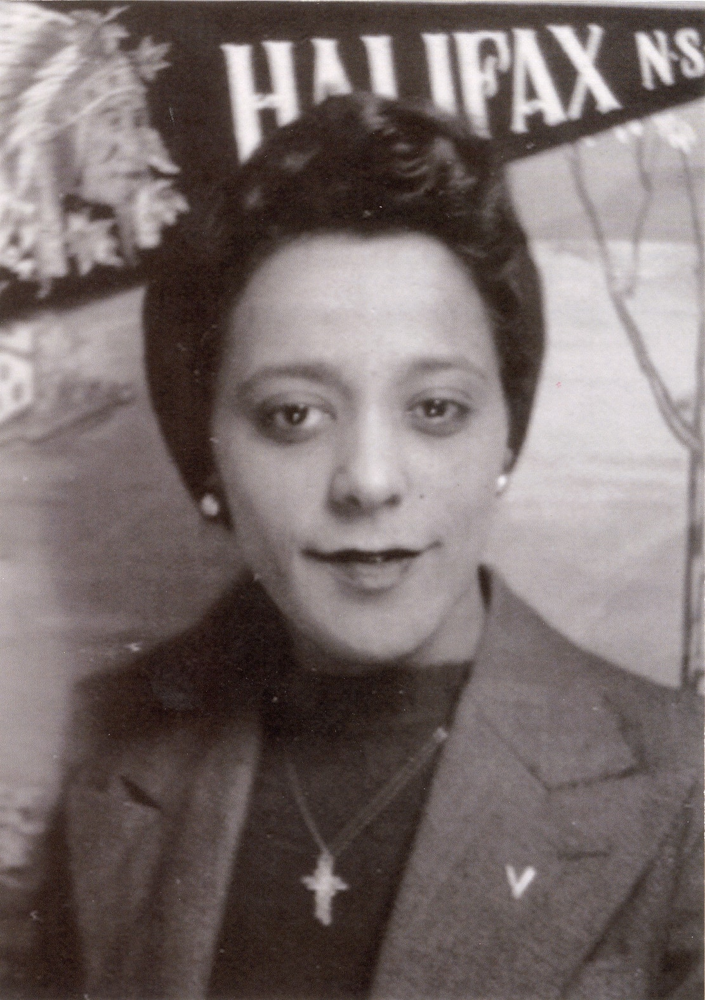
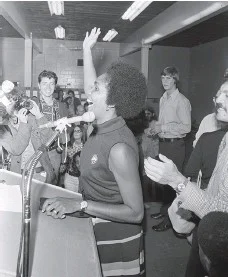
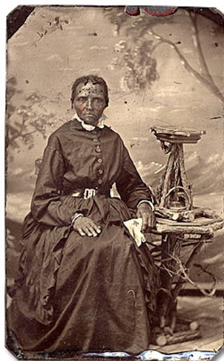
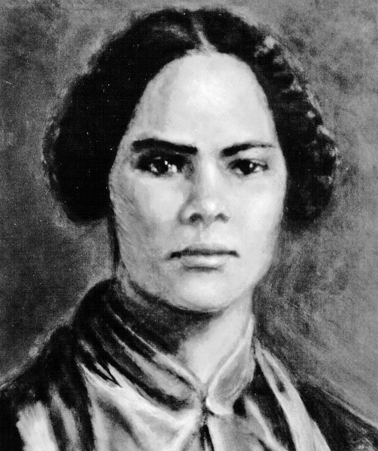
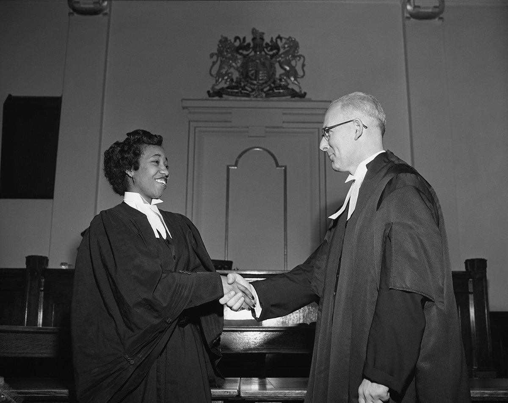
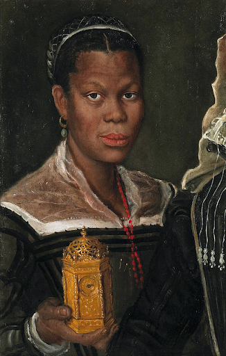
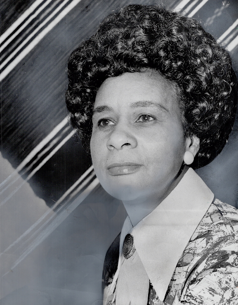
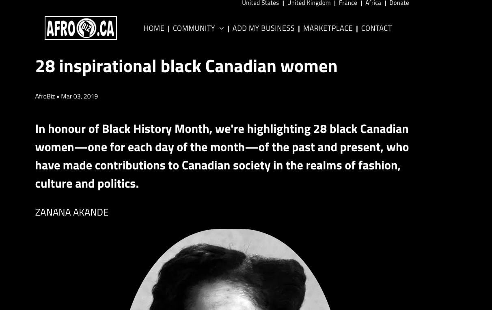
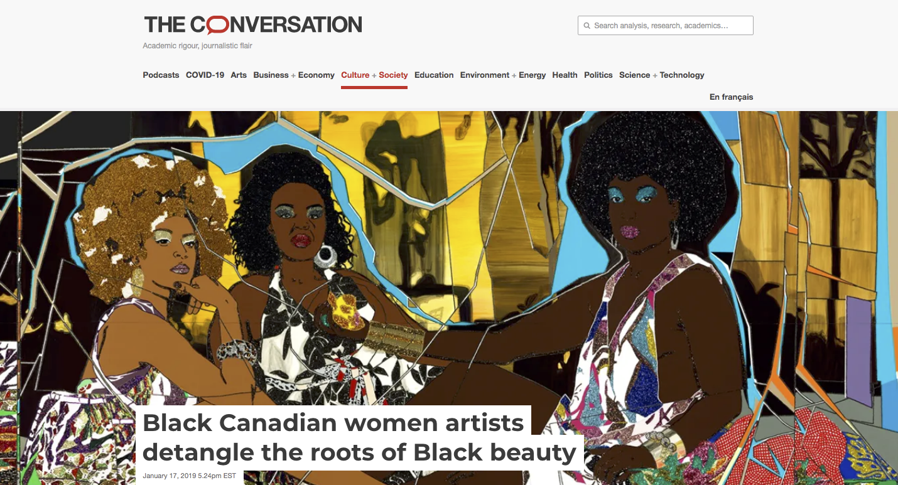
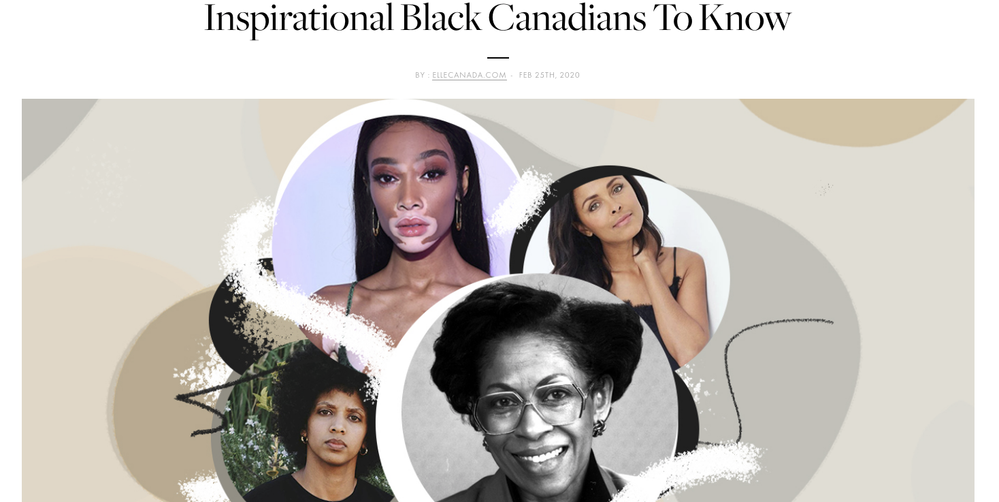

As February arrives every year, we begin to recognize the failure of an “education” that the western school system taught us about historic Black figures. This isn’t a time to sit around feeling guilty or frustrated, it’s a time to educate yourself about the truth. It’s the very least you can do!
After seeing a post made by @wacksounds on Instagram of Black Canadian women that we were never really taught about in school, I decided to share it in article form and talk a bit about why it’s important to reeducate ourselves, especially in a time where information is so easily accessible. This article can be a good starting place for your revamped Black History Month knowledge, but don’t just stop here. Have conversations, educate yourself, speak up.
Black Canadian Women I Wish I Learned About in History Class by @wacksounds on Instagram
Before I jump into some great Black Canadian women, let’s talk about the type of Black History Month education we’ve received. After all, it’s hard to criticize something that you don’t truly understand.
Western history lessons have a common theme of trying to erase the unpleasant parts and push for lighter, digestible, patriotic parts, but you can’t learn the thick and thins of history while erasing the thick of it.
For example, you’re often taught that Rosa Parks was the first Black woman to deny her seat, but the ACTUAL first Claudette Colvin, at 15 years old. When it was discovered that Colvin was pregnant, civil rights leaders decided to use Rosa instead since she had a cleaner image that wouldn’t be used to discredit their work. Both Rosa and Claudette were known to be “rebellious” civil rights activists but Rosa has always been portrayed as a quiet, peaceful, old lady.
What did you learn about Martin Luther King Jr in school? Probably that he was a civil rights leader pushing for equality and gave the infamous “I have a dream” speech, but he was so much more than that. He often talked about systematic racism and other political systems that aren’t really reflected in our education.
Right now, information is so easily available to us, yet our ignorance prevents us from actually checking what we think we know. Not to sound like a parent but, our generation is built on instant gratification and we hardly take the time to process the information we’re receiving.
Now unlike adults, I don’t mean this in a degrading way. Our generation is constantly gaining new information at such a rapid pace that we don’t really have time to question our sources a lot of the time. This is why misinformation is so easily spread and just as easily debunked.
Now that you have an idea of the importance of re-educating yourself, let’s talk about some historic Black Canadian women.
Viola Desmond
Born July 6, 1914, in Halifax, Nova Scotia, Viola Desmond was a businesswoman, civil rights activist, beautician, and mentor. On November 8th, 1946, Viola requested a ticket for a main floor seat at the Roseland Theatre in New Glasgow, Nova Scotia but was turned down by the cashier because it was the “Whites-only” section. She ended up sitting on the main floor anyways and was arrested and fought a conviction without being given legal representation. Her actions later led to civil rights acts against segregation in Canada.
Rosemary Brown
Rosemary Brown at NDP headquarters after being the first Black woman to be elected to a provincial legislature (1972)
Born Jun 17th, 1930 in Jamaica, Rosemary Brown was a Canadian politician, writer, feminist, and the first woman to run for leadership of a federal political party. She helped found the British Columbia Association for the Advancement of Coloured People (BCAACP) which worked on creating housing and employment opportunities for Black people in British Columbia. Her work introduced human rights legislation in the provincial parliament and she served 14 years as a member of the Legislative Assembly for the NDP.
Chloe Cooley
Chloe Cooley was an enslaved woman in the 1700s who was forcibly tied and put onto a boat by her enslaver to be sold across the Niagara River in New York. Witnesses reported the situation to the lieutenant governor and this led to the introduction of anti-slavery legislation which was an act that worked on the limitation of slavery in Upper Canada in 1793.
Mary Ann Shadd Carey
Mary Ann Shadd was born October 8th, 1923 in Delaware but moved to Canada to pursue community activism. Before moving to Canada, her parents actively helped enslaved people escape through the Underground Railroad by having their house as a “station” safe house for people to stay. Mary was an educator and a publisher and was the first Black female newspaper publisher in Canada. She established a racially integrated school for Black refugees in Canada and founded and edited the Provincial Freeman, a weekly paper that gave a voice to people who escaped to Canada from enslavement in America. It advocated for equality and integration, as well as giving Black Canadians and Americans a voice in the media.
Violet King Henry
Born October 18th, 1929 in Calgary, Alberta, Violet King was a great lawyer and made history being the first Black woman to become a lawyer in Canada. She was also the first Black person to be admitted to the Alberta bar, and the first Black Canadian woman to achieve a law degree in Alberta. In her career, she advocated for racial equality, underprivileged people, immigrants, and workplace rights for women.
Marie-Joseph Angélique
Born in Madeira Portugal, Marie Marie-Joseph Angélique was enslaved in Old Montreal (modern-day Quebec). She was tried and convicted for setting fire to her enslaver’s house even though there was no proof behind this. The conviction was based solely on the fact that Marie was known to be rebellious regardless of her enslavement. She became a symbol of Black resistance and liberation.
Kathleen Livingstone
Born October 13th, 1919 in London, Ontario, “Kay” Livingstone was an organizer, activist, actor, and broadcaster. She actively worked to expand collective awareness and pride in the Toronto Black community post World War II as well as end prejudice while promoting equality. She founded the Canadian Negro Women’s association in 1951, and organized the first National Congress of Black Women in 1973.
The past paves the way for the future, and these historic figures have left their imprint on the present. After this, I suggest reading up about some amazing present-day Black women who are inspiring our generation and making their historic mark.
Inspirational Black Canadian Women by AfroBiz (2019)
Black Canadian Women Artists Detangle the Roots of Black Beauty by Cheryl Thompson (The Conversation)
Inspirational Black Canadians to Know by Elle Canada